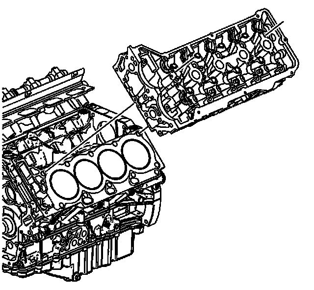
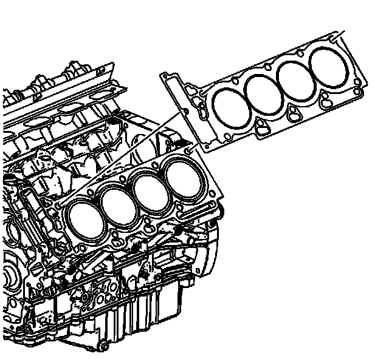

35. Cylinder Head Removal - Left Side
Cylinder Head Removal - Left Side
Tools Required
J 28410 Gasket Remover

1. Remove the 3 M6 external drive bolts from the front portion of the cylinder head.
Important: DO NOT reuse the M11 cylinder head bolts.
2. Remove and discard the 10 M11 internal drive cylinder head bolts.

3. Remove the left cylinder head. Ensure that no dowel guide pins are stuck in the cylinder head.
Important: You must clean the thread sealant material from the cylinder head bolt holes in the cylinder block. Failure to do so could cause false torque readings during reassembly.
4. After removing the cylinder head, remove any remaining bolt thread sealant material from the threaded cylinder block holes.

Important: DO NOT reuse the cylinder head gasket.
5. Remove the left cylinder head gasket.
6. Remove all remaining gasket material from the cylinder head and cylinder block using the J 28410 .